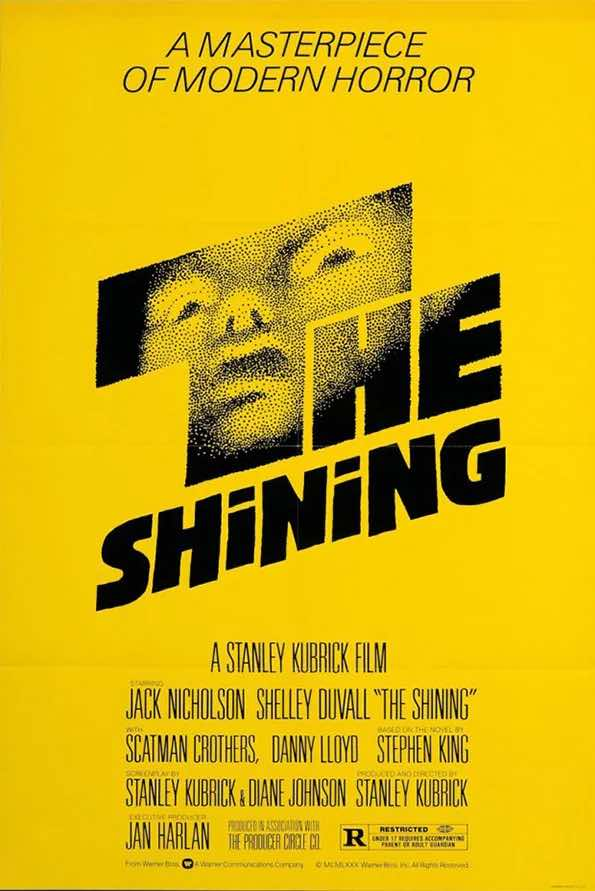
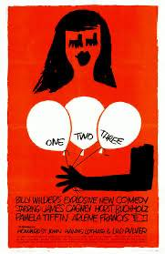
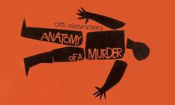

Early life
Saul Bass was born in the Bronx, New York, Saul Bass was born into an Eastern European Jewish family. It was later in life he got a fellowship to the arts student league in Manhattan, he then went on to study at Brooklyn college attending night classes hosted by György Kepes. During his studies he worked as a freelancer, he offered up many of his talents to companies, even Warner bros.
It was during this time in his studies that he offered his work up to many companies, attempting to boost himself in a freelance career. A notable company he offered his work to was Warner Bros Studios.
Thankfully it was Otto Preminger who had took Saul Bass on, he had liked Sauls work and had hired him to create title sequences for his movies and movie posters, a few that come to mind is his “Anatomy of a Murderer” and “The man with the golden arm”
Early Career
Before all the fame and after the education there was a small gap in between, where he was making his mark, thankfully to Saul putting his name out there it helped boost him.
In Saul's early career he was hired by a lot of companies, companies like Kleenex, Bell, AT+T, etc.
Saul seemed to truly understand what the brands were trying to present for themselves, for their customers.
For example, looking into the Kleenex brand logo. the tissue company wants to promote softness and comfort, the calligraphy and the use of a dark blue on white is creative.
The colour dark blue can represent a lot of things, like how emotionally it can represent honesty, loyalty, responsibility, security and trust. Its purpose can be used to create calm, reduce stress and to help people relax. It can also represent importance.
The colour white also helps promote calmness and purity, it also represents goodness, clarity and openness. But the only negative is white is considered a boring and flat colour, thankfully with Saul pairing it with the dark blue it has become a staple throughout the brand, with the brand sticking to the same colour scheme and typeface.
Another example is the AT&T company logo.
The AT&T Company is a telephone and telegraph company, the full unabbreviated version is “American Telephone & Telegraph Company”, Saul Bass has seemed to use the same approach, Blue, White and black. While I’ve already previously talked about what blue and white represent ill need to talk about what black represents.
Black represents sophistication, power, drama, formality and mystery. Now I believe he has picked these three colours for a reason. He used the black for its representation of sophistication and formality, as that's something most companies would want to represent when dealing with things such as phones. He also has represented ease with the blue and white.
The design itself is creative as well as it can somewhat look like a globe, and with the top left of it having more white that could possibly represent America.
Again like Kleenex they have kept the design but changed it slightly throughout the years, only having recently changed the typeface and the ball to a more modernised and sleek look.
I find Saul Bass truly set the standard that companies look for when creating a new logo, not one that speaks only for the company with the choice of colours but also creating it for the customers, the logos he creates tie in well with the company behind it.
Although creating company logos was not the only thing he had done in his early career before Preminger came around, Saul Bass had created his own company, it was known as Saul Bass & Associates. He had started his company around 1952.
I believe with his designs Saul Bass has had a huge impact on the design world when it comes to corporate and company designs, he has left his mark on many companies and it would take a really talented designer to upstage him, as all his designs that i have seen within my research have such a charm to them, a charm that possibly won't ever be recreated in the same way even if they tried, as you'll always hear the term “this reminds me of Saul Bass”
What is he best known for?
When you think of Saul bass what do you think of? Personally for me, when i think of Saul Bass i think of the eccentric, creative and colourful title sequences, it really reflects on him as a person. I believe it was his title sequences and Movie posters that have left a huge impact on the design in the Tv and Film industry.
A few movie posters that come to mind when I think of his work are his The Shining poster, The One Two Three poster, and my personal favourite, Anatomy of a murderer.
Let's take a deeper look into these.
The Shining
I like the usage of yellow and black. Yellow usually represents positive things, like sunlight, joy, it also promotes creativity, the negative side to yellow is cowardice, deception, and caution, you could say Saul Bass used yellow to represent the caution and deception of the main character we follow, Jack, as i previously discussed what black had meant its clear to see why he used both of these colours, to represent the darkness and caution that the movie puts forward.
One Two Three
One two three, said to be a comedy about a coca cola representative from berlin has to stop his american colleagues daughter from marrying a communist. Definitely a film for its time. Its interesting to see the usage of white, red and black for a comedy film, as two out of three of those colours represent danger, and white representing purity, i find the contrast of them all work well, especially when looking at how saul creates his work, with slanted lines and quick cuts i also feel the red and white is a hint to the coca-cola representative, but also having the red representing the communism at a push. The colours pull each other together working together to pop out and stand out.
Anatomy of a murder
Anatomy of a murder is a movie about a small-town barrister successfully defends the army officer, who is accused of killing the owner of a bar for beating and raping his wife. I find the poster interesting, it's one of my favourites for a few reasons, the way the body looks chopped up with how the legs, arms, and head are placed separately and separated from the head, like they are looking into the anatomy of the body, the colours used is also very creative, again, black representing death, and orange representing warmth, energy and confidence. Again I find the slanted lines and clear cuts is an interesting creative choice.
Saul Bass’s inspiration
While Saul has created some absolutely amazing designs, it comes to question where he has took his inspiration from.
A few notable inspiration takes are Matisse's cut outs, the colour blocks of De Stijl, Russian Constructivism and Bauhaus, specifically the artist Lazlo Maholy Nagy.
It can be shown in the way the colours he chose carefully, the lines he made and the placements he created, also considering the cut outs and the typography, you can see how he's took small snippets of inspiration from all of these artists and turned it into his own style that in turn began to inspire a whole new generation, who use his work specifically to create their own ideas.
But how did he take the inspiration from the things he envisioned and put it onto the page? From interviews I read he would have used methods of working closely with the composers and the soundtrack, taking inspiration from the music, drawing emotion from that, to invoke it into his style and animations. This would help him also pick the colours, and by looking into the film further he would take snippets to foreshadow what would be coming.
Movies that took inspiration from him
While Saul Bass had a huge impact on just the posters and logos aspect of design, it's hard not to notice other films taking inspiration from his title sequences. You can see the impact he's left upon Hollywood when you look at how certain movies have started their title sequences.
One that immediately pops into mind is Monsters inc, with the colourful, misshapen doors and misshapen monsters, each sliding and popping onto the screen, it reminds me of his “anatomy of a murder” and “vertigo” with the popping and jumpy movements of the doors and the smooth moves of the monsters.
Another one that would give me a Bass vibe is “Catch me if you can”, the fluid movements of the figures and the planes in the background with the jumpy shapes surrounding them gives me a feel of what I've seen before, it's such a creative sequence with simple colours also.
These title sequences, while not directly crediting Bass himself, have such a similarity to his work that you can't help but see the inspiration he's left in the movie world.
His impact on the design world.
In my own personal opinion, Saul Bass had a huge impact on the entire design world, there's no specific media he stuck to, he experimented in a lot of fields and it's admirable.
I find his constant push to try new things and to put his work out there, he didn't let anything stop him, even while studying he was constantly offering his work to companies, his hard work and dedication truly paid off.
I don't think we will ever find someone as remarkable like Saul Bass again, someone who brought his A game, if we do i don't think it will have quite the charm that his work had, with the way many artists and movie creators try and replicate what he has made they will never get to be what he was.
I believe, through my research and from what I've seen, he's left a huge impact, with certain movie creators trying their best to have their sequences match up to his, and many other artists trying to create modern posters in his style, and also many companies keeping the main structure of the logo he created for them.